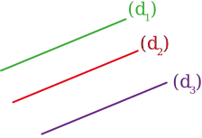
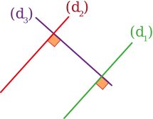
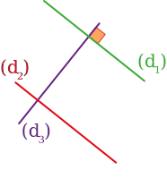

|
E3
|
- Propriétés sur les perpendiculaires et parallèles
|
Activité Introduction
-
Effectuer le programme de construction ci-contre
-
On sait que $(d) \perp (d_1)$ et que $(d) \perp (d_2)$.
Que penser de la position de $(d_1)$ par rapport à $(d_2)$ ?
-
On sait que $(d_3) \parallel (d_2)$ et que $(d_2) \parallel (d_1)$.
Que penser de la position de $(d_3)$ par rapport à $(d_1)$ ?
-
On sait que $(d) \perp (d_2)$ et que $(d_3) \parallel (d_2)$.
Que penser de la position de $(d_3)$ par rapport à $(d)$ ?
Programme de construction
-
Tracer une droite $(d_1)$ sur papier uni.
-
Tracer une droite $(d)$ perpendiculaire à $(d_1)$, puis une droite $(d_2)$ perpendiculaires à $(d)$.
- Tracer une droite $(d_3)$ parallèle à $(d_2)$.
Parallèles :
Propriété 1 :
Si deux droites sont parallèles à une même troisième droite, alors ces droites sont parallèles entre elles.
Exemple :
SI
$\textcolor{#43a047}{(d_1)}\parallel\textcolor{#7C4DA5}{(d_3)}$ et $\textcolor{#e53935}{(d_2)}\parallel\textcolor{#7C4DA5}{(d_3)}$
ALORS $\textcolor{#43a047}{(d_1)}\parallel\textcolor{#e53935}{(d_2)}$

Propriété 2 :
Si deux droites sont perpendiculaires à une même troisième droite, alors ces droites sont parallèles entre elles.
Exemple :
SI
$\textcolor{#43a047}{(d_1)}\perp\textcolor{#7C4DA5}{(d_3)}$ et $\textcolor{#e53935}{(d_2)}\perp\textcolor{#7C4DA5}{(d_3)}$
ALORS $\textcolor{#43a047}{(d_1)}\parallel\textcolor{#e53935}{(d_2)}$

Perpendiculaires :
Propriété 3 :
Si deux droites sont parallèles et que l'une d'elle est perpendiculaire à une troisième droite, alors cette troisième droite est aussi perpendiculaire à l'autre.
Exemple :
SI
$\textcolor{#43a047}{(d_1)}\parallel\textcolor{#e53935}{(d_2)}$ et $\textcolor{#43a047}{(d_1)}\perp\textcolor{#7C4DA5}{(d_3)}$
ALORS $\textcolor{#e53935}{(d_2)}\perp\textcolor{#7C4DA5}{(d_3)}$
